-
To check the functionality of Populate User Flag
14:39:51 PM / 31:38:995 Fail
To check the functionality of Populate User Flag
05.22.2023 14:39:51 05.22.2023 14:41:30 31:38:995 · #test-id=1FailChecking if only the “Approved” population tasks appear at the level of populate screenGiven navigate to CSM param application and login with valid credentialsstepdefinitions.HooksClass.addScreenshot(io.cucumber.java.Scenario)screenshot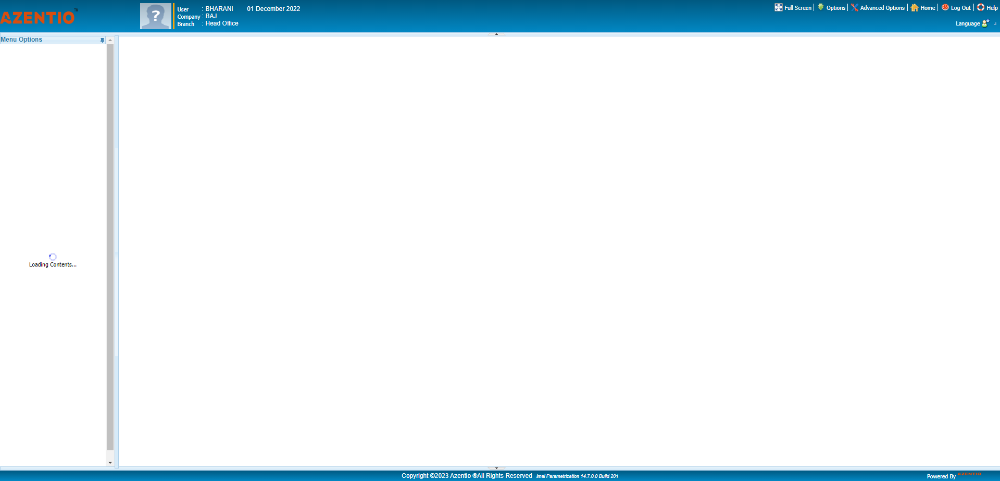And Click the Parameters Flagstepdefinitions.HooksClass.addScreenshot(io.cucumber.java.Scenario)screenshot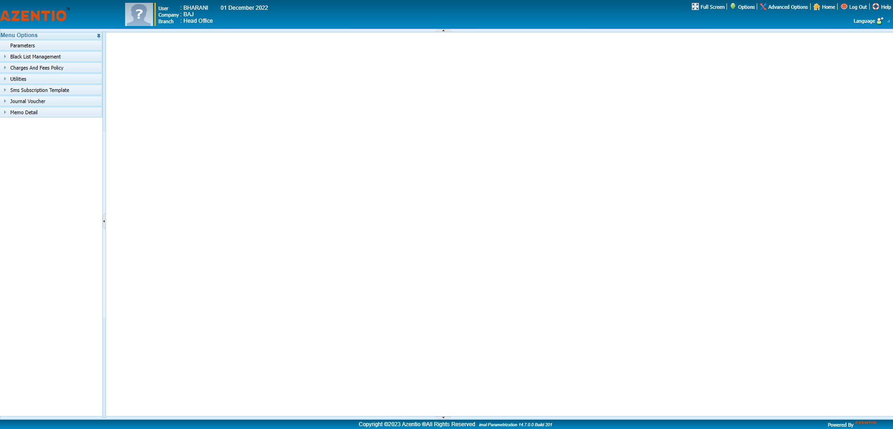Then Click the System Parameters Flagstepdefinitions.HooksClass.addScreenshot(io.cucumber.java.Scenario)screenshot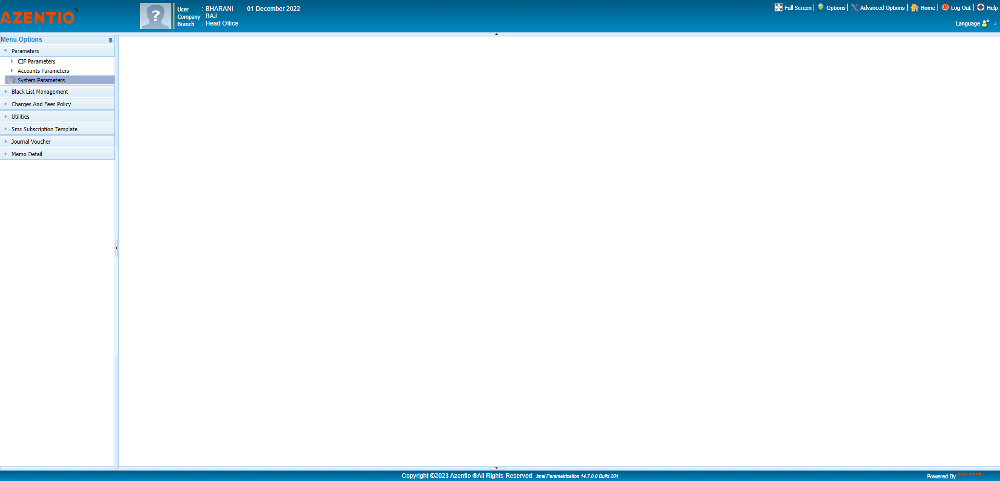And Click the User Flag under System Parameters Flagstepdefinitions.HooksClass.addScreenshot(io.cucumber.java.Scenario)screenshot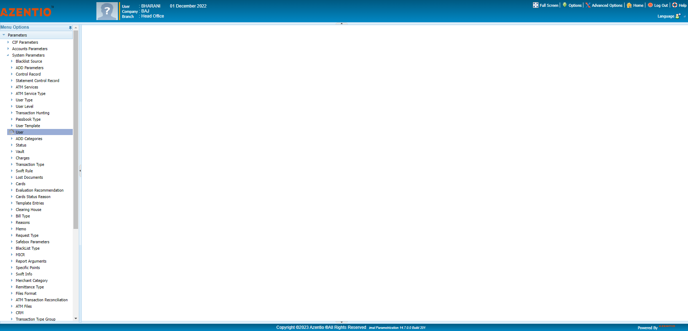Then Click the Populate user Flag under User Flagstepdefinitions.HooksClass.addScreenshot(io.cucumber.java.Scenario)screenshot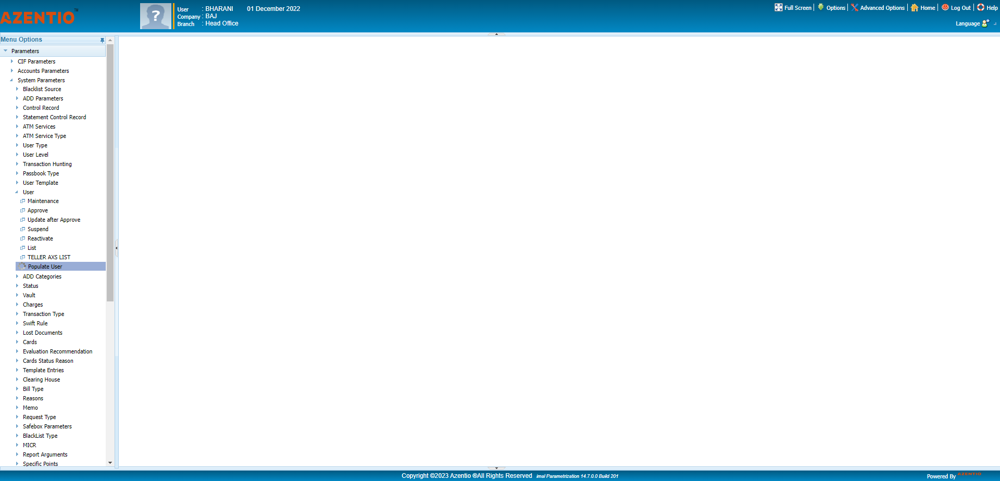And Click Maitenance Flag under Populate user Flagstepdefinitions.HooksClass.addScreenshot(io.cucumber.java.Scenario)screenshot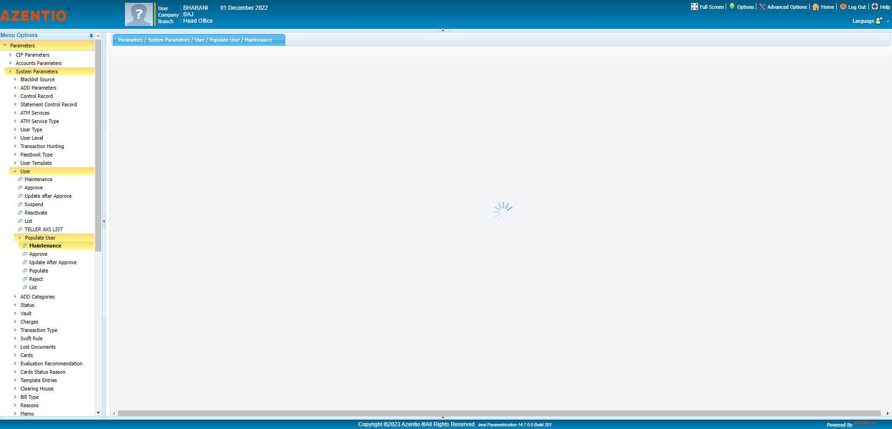Then Enter the code value under populate user maintenance screenstepdefinitions.HooksClass.addScreenshot(io.cucumber.java.Scenario)screenshotAnd Enter the brief description valuse under populate user maintenance screenstepdefinitions.HooksClass.addScreenshot(io.cucumber.java.Scenario)screenshot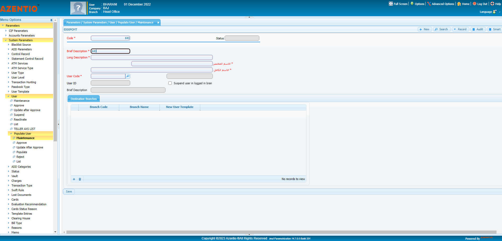Then Enter the long description valuse under populate user maintenance screenstepdefinitions.HooksClass.addScreenshot(io.cucumber.java.Scenario)screenshot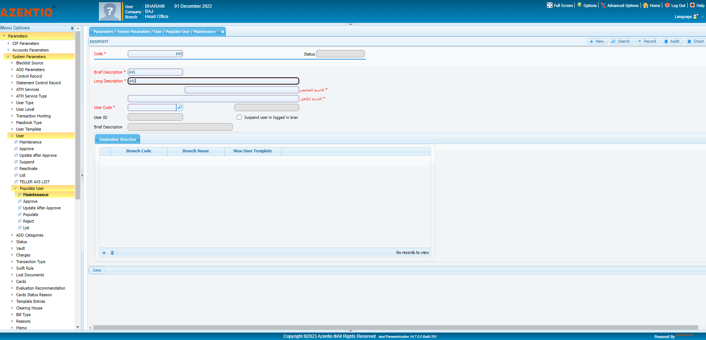And Enter the brief description arabic values under populate user maintenance screenstepdefinitions.HooksClass.addScreenshot(io.cucumber.java.Scenario)screenshot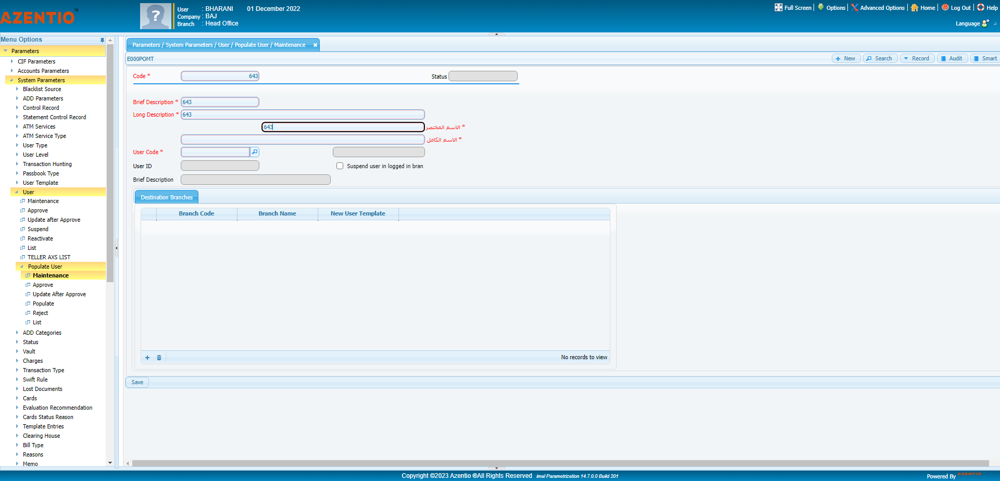Then Enter the long description arabic valuse under populate user maintenance screenstepdefinitions.HooksClass.addScreenshot(io.cucumber.java.Scenario)screenshot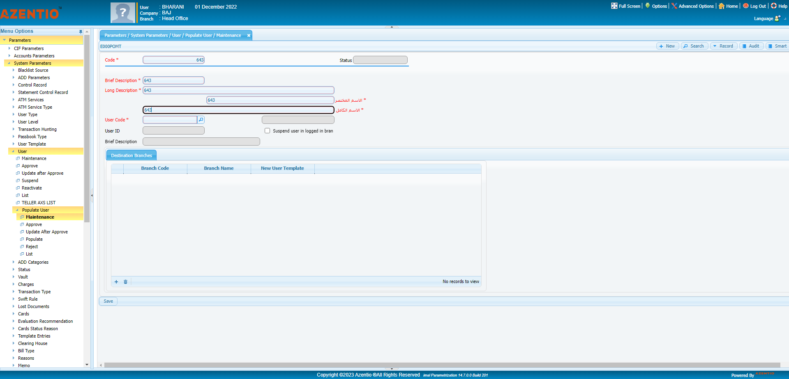And Enter the user code value under populate user maintenance screenstepdefinitions.HooksClass.addScreenshot(io.cucumber.java.Scenario)screenshot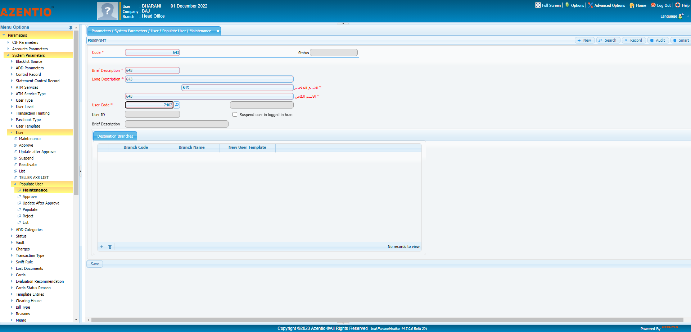Then Click the search icon in user codestepdefinitions.HooksClass.addScreenshot(io.cucumber.java.Scenario)screenshot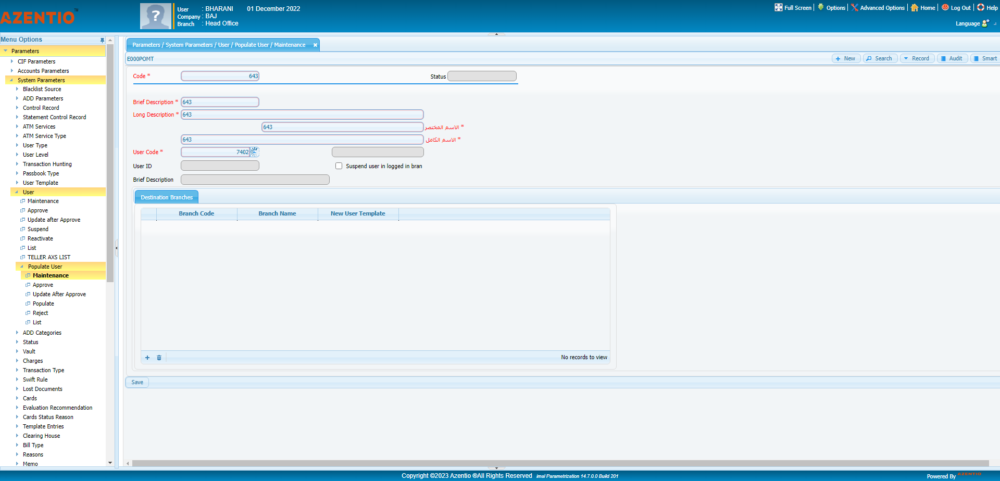And Click the addbutton icon under destination branchesstepdefinitions.HooksClass.addScreenshot(io.cucumber.java.Scenario)screenshot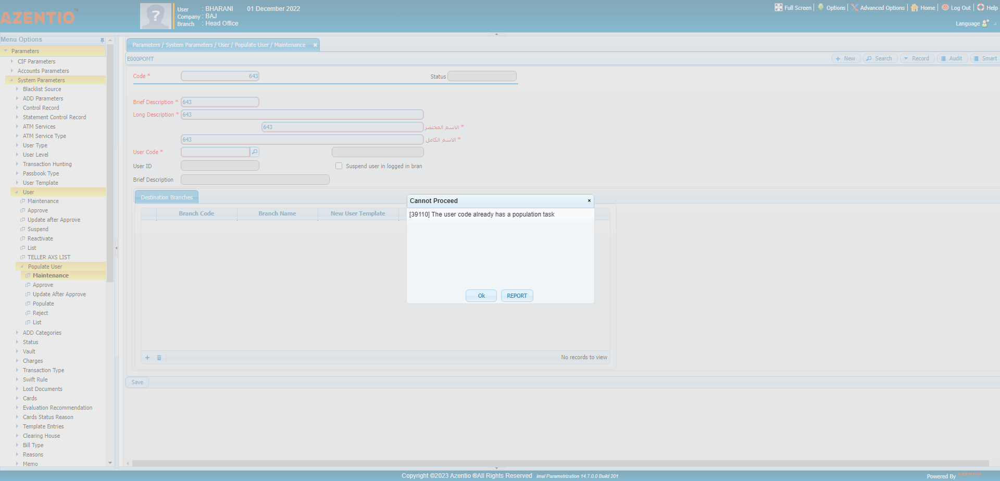Then Enter the branch code value under destination branchesStep skippedAnd Enter the new user template value under destination branchesStep skippedThen Click the save button under destination branchesStep skippedAnd Click the Ok popup under maintenance flagStep skippedThen Click the Ok popup under the success popupStep skippedAnd Click the populate flag under Populate userStep skippedThen Enter the Population code under populate screenStep skippedAnd Click the Approve Flag under Populate userStep skippedThen Enter the approve code under approve FlagStep skippedAnd Select the entered value code under approve flagStep skippedAnd click on approve button in populate userStep skippedAnd Click Okpopup under Approve ScreenStep skippedAnd Click the populate flag under Populate userStep skippedThen Again Enter the Population code under populate screenStep skippedAnd Double Click the Entered code under populate screenStep skippedThen Approve the selected code under populate screenStep skippedAnd Click okpopup under populate screenStep skippedThen Click okpop sucess under populate screenStep skipped
Started
May 22, 2023 02:39:45 PM
Ended
May 22, 2023 02:41:30 PM
Features Passed
0
Features Failed
1
Features
Scenarios
Steps
Timeline
Tags
| Name | Passed | Failed | Skipped | Others | Passed % |
|---|---|---|---|---|---|
| @TSA_014 | 0 | 1 | 0 | 0 | 0% |
System/Environment
| Name | Value |
|---|---|
| version | 10 |
| os | windows |
-
@TSA_014
1 tests
@TSA_014
1 failedStatus Timestamp TestName Fail 14:39:51 PM Checking if only the “Approved” population tasks appear at the level of populate screen To check the functionality of Populate User Flag.Checking if only the “Approved” population tasks appear at the level of populate screen
-
org.openqa.selenium.ElementClickInterceptedException
1 tests
org.openqa.selenium.ElementClickInterceptedException
1 failedStatus Timestamp TestName Fail 14:41:21 PM And Click the addbutton icon under destination branches To check the functionality of Populate User Flag.Checking if only the “Approved” population tasks appear at the level of populate screen.And Click the addbutton icon under destination branches